In R gibt es mehrere Pakete, mit denen man Daten grafisch darstellen kann. Grafiken, welche mit unterschiedlichen Paketen erstellt wurden, lassen sich aber nicht miteinander kombinieren. Deshalb entscheidet man sich typischerweise vor der Erstellung einer Grafik für das zu verwendende Grafikpaket.
Das graphics-Paket wird auch als Base-Plotting-System bezeichnet. Es ist Teil von R und muss nicht extra installiert werden. Das Base-Plotting-System eignet sich sehr gut für schnelle Visualisierungen – mit etwas Aufwand kann man aber auch schöne Grafiken für Publikationen erstellen.
Für die folgenden Beispiele verwenden wir den in R enthaltenen airquality-Datensatz (eine kurze Beschreibung kann man dem Hilfetext ?airquality entnehmen):
str(airquality)
'data.frame': 153 obs. of 6 variables:
$ Ozone : int 41 36 12 18 NA 28 23 19 8 NA ...
$ Solar.R: int 190 118 149 313 NA NA 299 99 19 194 ...
$ Wind : num 7.4 8 12.6 11.5 14.3 14.9 8.6 13.8 20.1 8.6 ...
$ Temp : int 67 72 74 62 56 66 65 59 61 69 ...
$ Month : int 5 5 5 5 5 5 5 5 5 5 ...
$ Day : int 1 2 3 4 5 6 7 8 9 10 ...
Die plot()-Funktion
Eine der wichtigsten Funktionen im Base-Plotting-System ist plot(). Diese Funktion erstellt passende Visualisierungen in Abhängigkeit von den darzustellenden Daten.
Wenn man einen numerischen Vektor übergibt, erhält man eine Punktgrafik. Auf der x-Achse wird der Index der Datenpunkte dargestellt, auf der y-Achse die Datenwerte:
plot(airquality$Ozone)
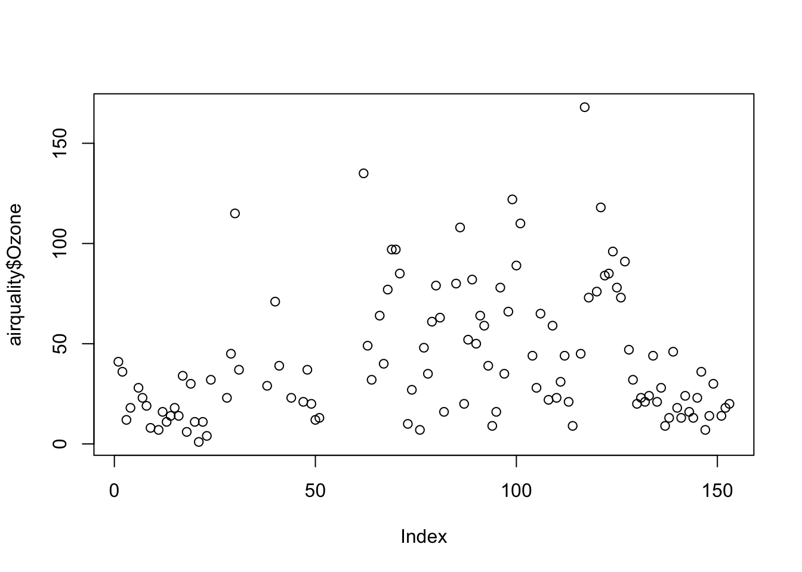
Wenn man zwei numerische Vektoren übergibt, erhält man einen sogenannten Scatterplot. Das erste Argument wird auf der x-Achse und das zweite Argument wird auf der y-Achse dargestellt:
plot(airquality$Wind, airquality$Ozone)
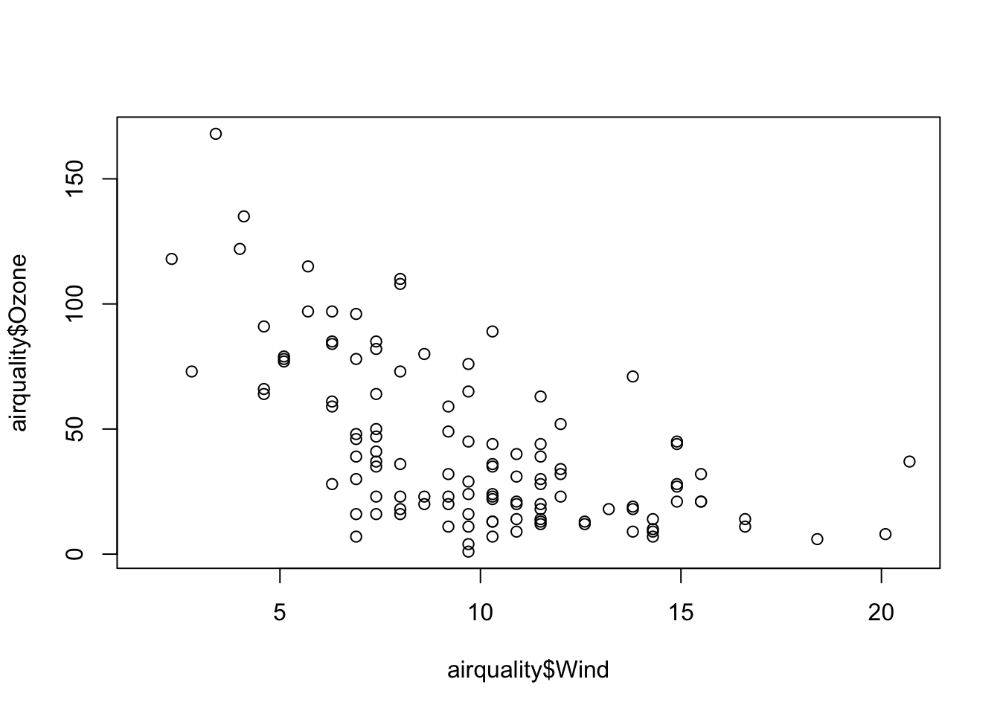
Auch mit Datumswerten kann plot() umgehen. Erstellen wir zunächst aus den beiden Spalten Month und Day eine neue Spalte namens date (aus der Beschreibung der Daten kann man entnehmen, dass diese im Jahr 1973 aufgezeichnet wurden):
Die Funktion paste() fügt mehrere Character-Vektoren elementweise zu einem einzigen Vektor zusammen (standardmäßig wird zwischen den Elementen ein Leerzeichen eingefügt):
paste("Hello", "World")
[1] "Hello World"
Die einzelnen Argumente können Vektoren mit beliebiger Anzahl an Elementen sein:
Dieser Vektor kann dann mit der Funktion as.Date() mit dem Argument format="%m %d %Y" in einen Datumsvektor konvertiert werden, welchen wir der Spalte date im Data Frame zugewiesen haben:
class(airquality$date)
[1] "Date"
Anschließend können wir diese Datumsspalte für die Darstellung auf der x-Achse verwenden. In diesem Beispiel werden dann automatisch die Namen für die fünf Monate auf der x-Achse angezeigt:
plot(airquality$date, airquality$Ozone)
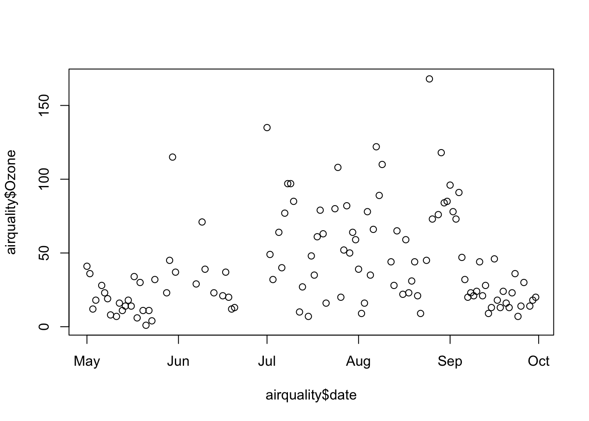
Übergibt man der Funktion einen Faktor, wird automatisch eine Balkengrafik mit den Häufigkeiten der einzelnen Stufen erzeugt:
plot(factor(airquality$Month))
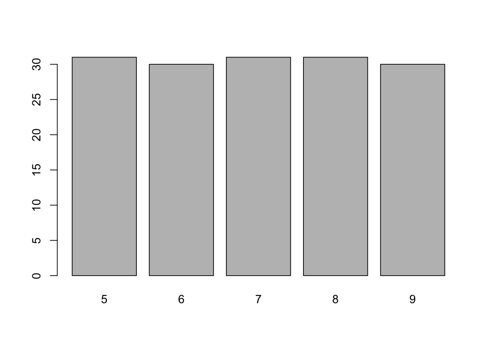
Histogramme
Die Funktion hist() erstellt ein Histogramm eines Vektors:
hist(airquality$Ozone)
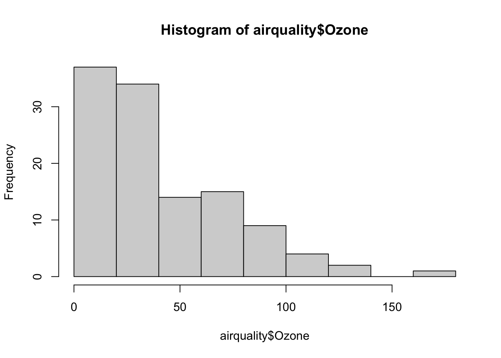
Mit Hilfe eines Histogramms kann man die Verteilung der Werte eines Vektors visualisieren. Die Anzahl der Säulen im Histogramm kann man mit dem Argument breaks explizit festlegen:
hist(airquality$Ozone, breaks=4)
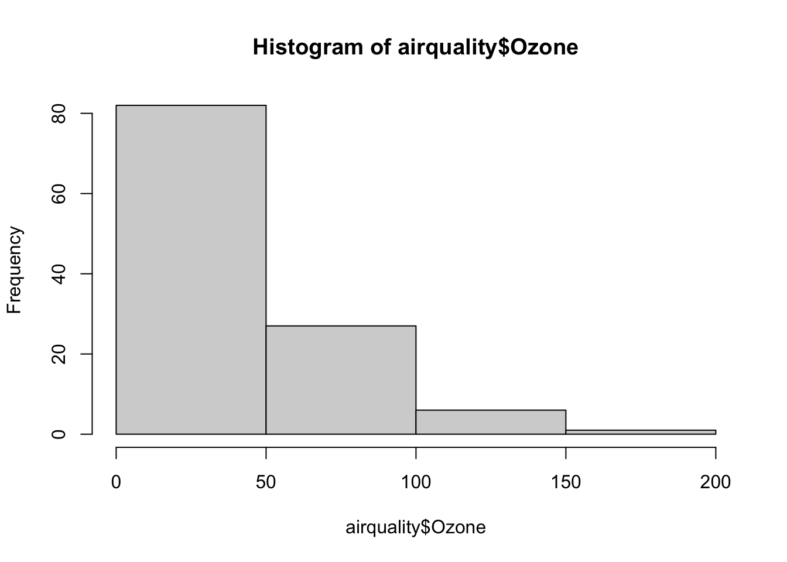
Hinweis
Das Argument breaks ist nur eine Empfehlung – die tatsächliche Anzahl an Balken wird so adaptiert, dass die Grafik immer noch übersichtlich darzustellen ist.
Boxplots
Eine weitere Möglichkeit, die Verteilung von Werten grafisch darzustellen, bietet die Funktion boxplot(). Ein Boxplot zeigt den Median, den Interquartilsabstand (IQR) sowie das Minimum und das Maximum (plus eventuelle Ausreißer) der Daten.
boxplot(airquality$Temp)
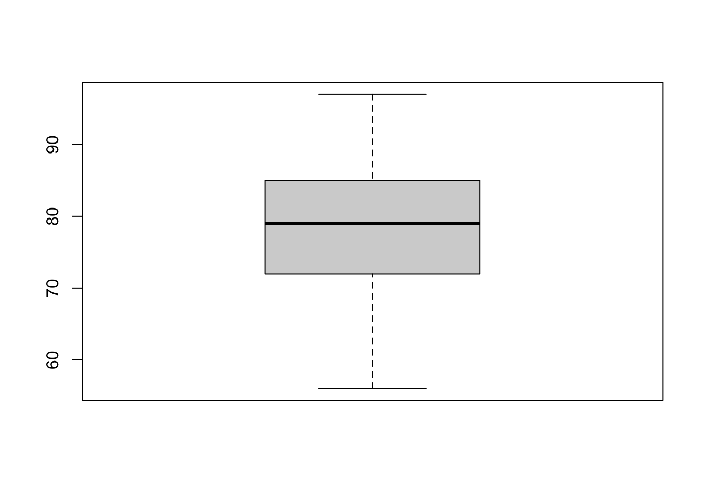
Ein einzelner Boxplot ist für sich noch relativ wenig hilfreich. Wenn man statt eines Vektors eine sogenannte Formel angibt, kann man mehrere Boxplots in einer Grafik darstellen.
Hinweis
Eine Formel in R wird durch das Tilde-Zeichen (~) definiert, mit jeweiligen Ausdrücken links bzw. rechts davon. Ein Beispiel für eine Formel ist y ~ x mit y auf der linken Seite und x auf der rechten Seite. Die Bedeutung einer Formel hängt von der jeweiligen Funktion ab. Viele Funktionen verlangen Formeln als Argumente, wir werden dies vor allem bei der Berechnung von linearen Modellen intensiv nutzen.
Im folgenden Beispiel werden Boxplots für airquality$Temp in Abhängigkeit von airquality$Month dargestellt:
boxplot(airquality$Temp ~ airquality$Month)
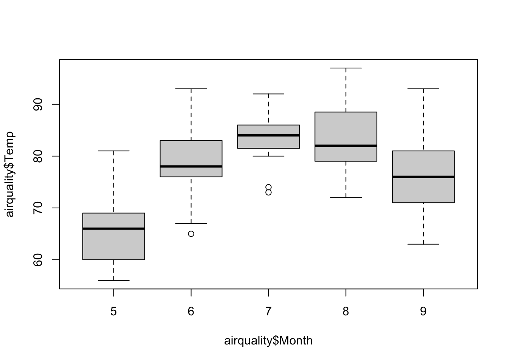
Hier bestimmt also die linke Seite der Formel die Werte auf der y-Achse, und die rechte Seite die Werte auf der x-Achse.
Grafiken anpassen
Oft möchte man diverse Eigenschaften von Grafiken anpassen, wie z.B. die verwendete Linienart, Farben, Symbole, Titel, Achsenbeschriftungen, und so weiter. Viele Parameter kann man bereits bei der Erstellung der Grafik als Argument übergeben. Eine angepasste Version des Scatterplot-Beispiels von oben ist:
plot( airquality$Wind, airquality$Ozone,xlab="Wind (mph)", # x-Achsen-Titelylab="Ozone (ppb)", # y-Achsen-Titelmain="New York City air quality (1973)", # Titelpch=21, # Kreissymbol mit separater Rand- und Hintergrundfarbebg="lightblue"# Hintergrundfarbe)
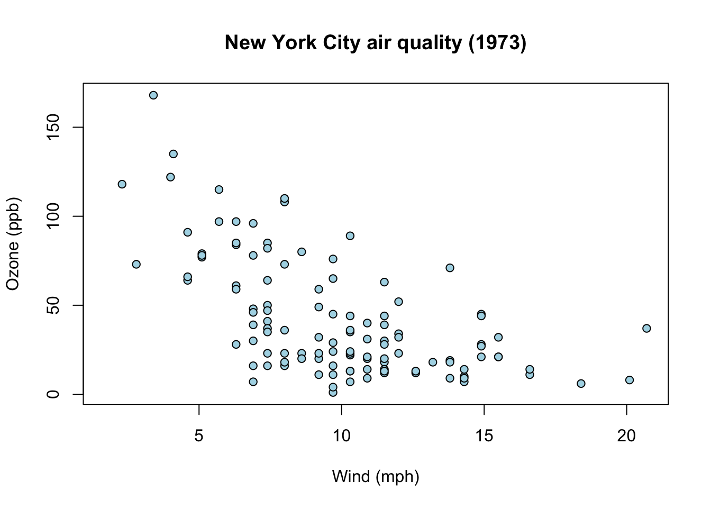
Eine verbesserte Version des Ozonverlaufs über die Zeit erhält man, wenn man folgende Argumente setzt (hier wird mit type der Plot-Typ festgelegt, im Beispiel wird "l" für eine Liniengrafik gewählt):
plot( airquality$date, airquality$Ozone,xlab="",ylab="Ozone (ppb)",main="", # kein Titeltype="l", # Liniengrafikcol="orange")
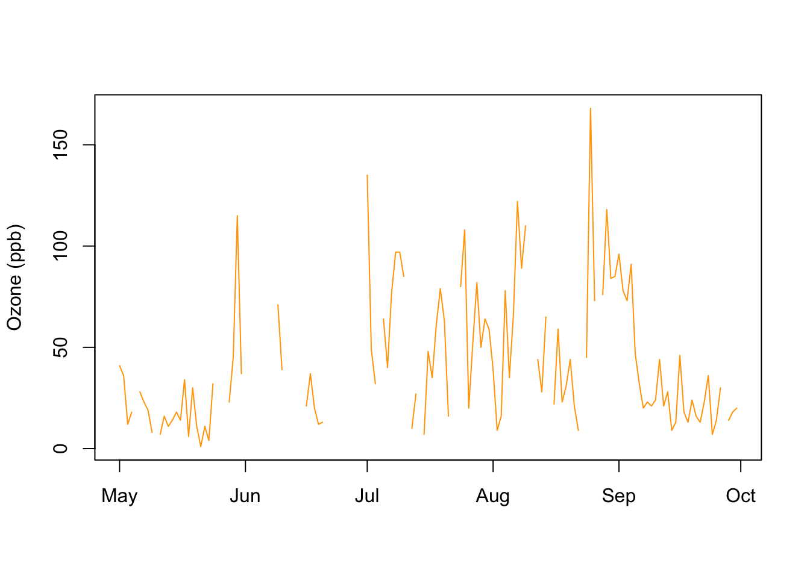
Man erkennt mit dieser Liniengrafik auch sofort, dass es fehlende Werte in den Daten gibt (dort wo die Linie unterbrochen ist).
Die diversen Plot-Funktionen haben viele gemeinsame Parameter, mit denen man das Aussehen der Plots beeinflussen kann. In den vorigen Beispielen wurden folgende Parameter verändert:
Mit der Funktion par() kann man alle relevanten Parameter abfragen bzw. global definieren (der Hilfetext ?par liefert eine Beschreibung aller möglichen Parameter). Wenn man diese Funktion ohne Argumente aufruft, erhält man die aktuell gesetzten Werte aller grafischen Parameter. Man kann auch einzelne Parameter global verändern, d.h. nach einer Änderung werden neue Grafiken immer mit den aktuellen Parametern erstellt.
Folgendes Beispiel demonstriert die Verwendung von par(). Zuerst fragen wir den aktuellen Wert des Parameters col (also die Farbe) ab. Dies funktioniert mit der $-Schreibweise wie beim Herausgreifen von Spalten aus einem Data Frame:
par()$col
[1] "black"
Wir sehen, dass die Farbe auf schwarz gesetzt ist. Dies bestätigt auch eine kleine Beispielgrafik, die aus schwarzen Elementen besteht:
Folgende Linientypen sind als Werte für lty möglich:
lty
Typ
0
leer
1
durchgehend (Standard)
2
strichliert
3
gepunktet
4
Punkt-Strich
5
lange Striche
6
kurzer Strich, langer Strich
Die Hilfe der Funktion points() listet alle verfügbaren Zeichensymbole für pch auf. Der Parameter cex.axis setzt einen Skalierungsfaktor für die Achsenbeschriftung; standardmäßig ist dieser 1 – Werte kleiner als 1 verkleinern daher die Achsenbeschriftung, Werte größer als 1 vergrößern diese.
Hinzufügen von Elementen zu einer Grafik
Mit dem Base-Plotting-System kann man eine Grafik erstellen und danach zusätzliche grafische Elemente hinzufügen. Dazu verwendet man entsprechende Funktionen, die im Folgenden vorgestellt werden.
Einen Titel kann man mit title() hinzufügen:
with(airquality, plot(Wind, Ozone))title(main="Ozone and Wind in NYC")
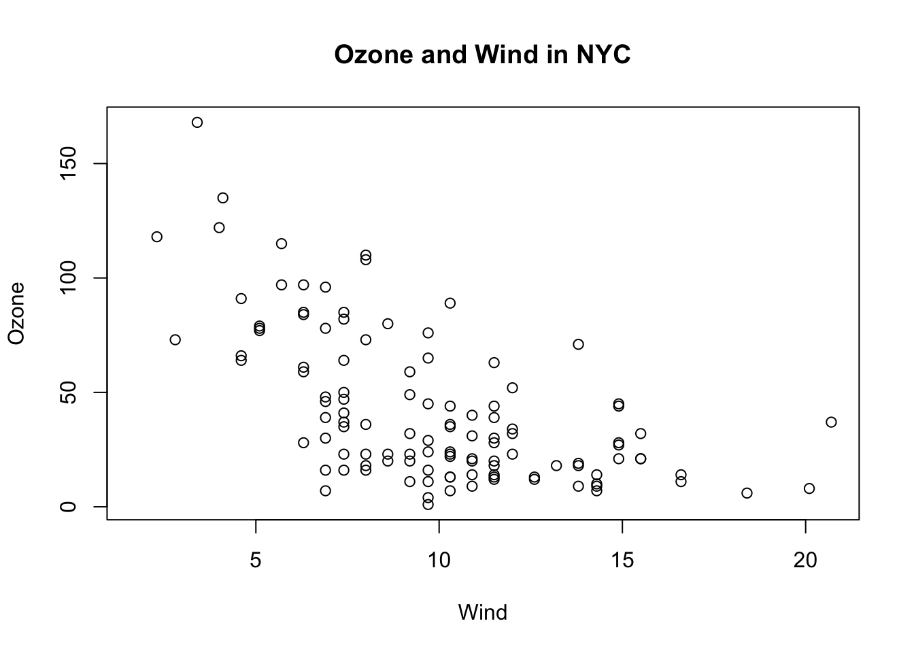
Tipp
In diesem Beispiel verwenden wir außerdem die Funktion with(). Diese ermöglicht es, innerhalb der Klammern Spaltennamen aus einem Data Frame direkt zu verwenden, also z.B. statt airquality$Ozone kann man direkt Ozone schreiben. D.h. die obige erste Zeile könnte man ohne with() auch vollkommen äquivalent als plot(airquality$Wind, airquality$Ozone) schreiben. Beachten Sie allerdings, wie die standardmäßige Achsenbeschriftung davon abhängt, wie man die x- bzw. y-Daten übergibt!
Mit points() kann man Punkte hinzufügen. Dies kann man beispielsweise verwenden, um Gruppen von Daten in unterschiedlichen Farben darzustellen. Wir beginnen mit einem leeren Plot (type="n") und fügen diesem dann Punkte mit unterschiedlichen Farben und Symbolen hinzu. Die Funktion legend() fügt eine Legende hinzu.
Hier übergibt man die Linie in Form einer Geradengleichung, die man mit der Funktion lm() berechnen kann – mehr zu dieser Funktion werden wir später bei den Regressionsmodellen kennenlernen. Im Moment reicht es zu wissen, dass diese Funktion eine Formel der Form y ~ x erwartet, d.h. man gibt die diesen Variablen entsprechenden Spaltennamen der y- bzw. x-Achsen an.
Text und Pfeile kann man mit text() bzw. arrows() hinzufügen:
Es gibt viele Möglichkeiten, die Verteilung einer (numerischen) Variable zu visualisieren (z.B. Histogramme und Boxplots). Prinzipiell sollte man zusätzlich zu zusammenfassenden Größen (wie Mittelwert, Median, Streuung, etc.) immer die Rohdaten in der Grafik darstellen. Dies ist mit der Funktion stripchart() möglich.
Sehen wir uns als Beispiel die Spalte airquality$Ozone an. Man könnte in einer Balkengrafik nur deren Mittelwert darstellen, was aber nicht sehr informativ ist:
barplot(mean(airquality$Ozone, na.rm=TRUE))
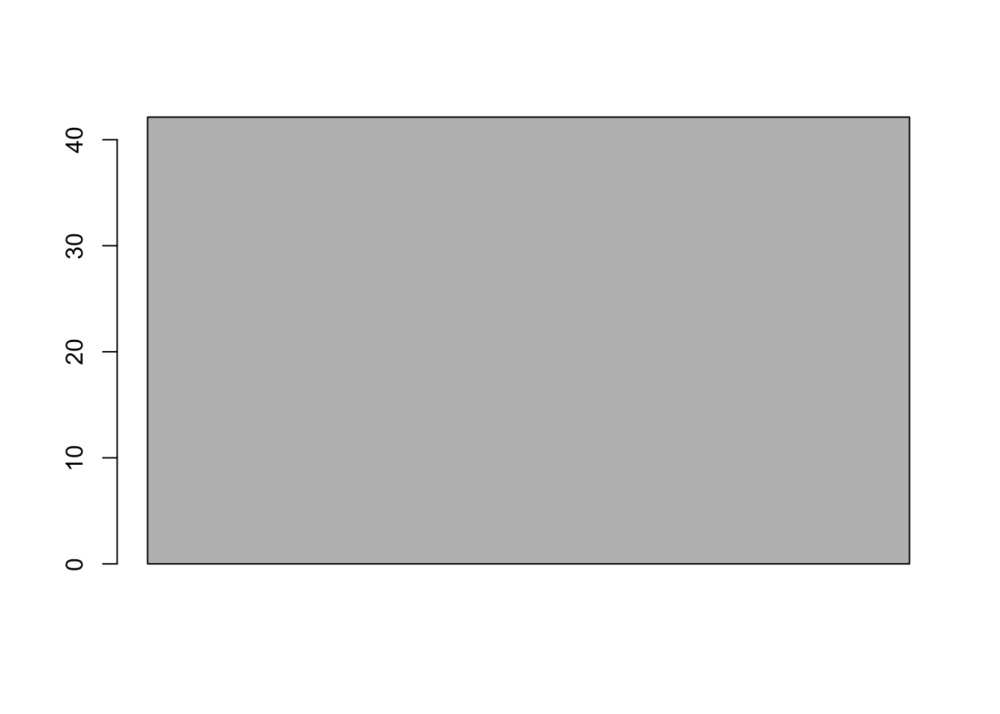
Etwas besser wäre ein Boxplot:
boxplot(airquality$Ozone)
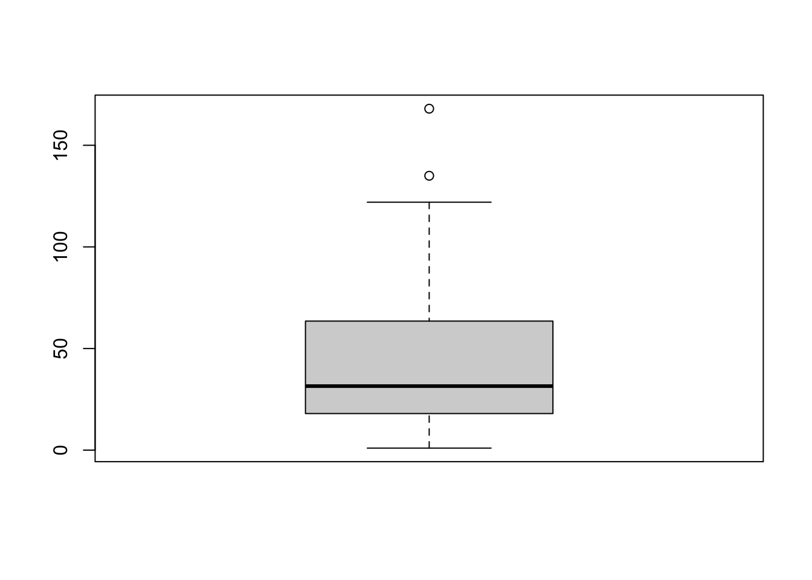
Noch besser ist es, wenn man zusätzlich die Rohdaten in die Grafik aufnimmt (dies wird mit der Funktion stripchart() bewerkstelligt):
Beachten Sie, dass add=TRUE übergeben werden muss, wenn man die Punkte von stripchart() zu einer existierenden Grafik hinzufügen möchte (sonst wird eine neue Grafik erzeugt). Man könnte hier auch noch weitere Verbesserungen (wie z.B. method="jitter") vornehmen.
Ein komplettes Beispiel der Boxplots der einzelnen Monate würde wie folgt aussehen:
Mehrere Plots nebeneinander bzw. untereinander kann man mit dem globalen Parameter mfrow bzw. mfcol erzeugen. Hier setzt man den Parameter auf einen Vektor mit zwei Elementen, welcher die Anzahl an Zeilen und Spalten enthält. Beispielsweise entspricht also mfrow=c(3, 2) drei Zeilen und zwei Spalten. Danach erzeugt man die entsprechende Anzahl an Plots mit den diversen Funktionen wie z.B. plot(), hist(), boxplot(), usw. Man setzt mfrow, wenn man die Grafik zeilenweise befüllen will oder alternativ mfcol, wenn man spaltenweisen befüllen will.
par(mfrow=c(1, 2)) # 1 Zeile, 2 Spaltenwith(airquality, plot(Wind, Ozone, main="Ozone and Wind", pch=20)) # Grafik 1with(airquality, plot(Solar.R, Ozone, main="Ozone and Solar Radiation", pch=20)) # Grafik 2
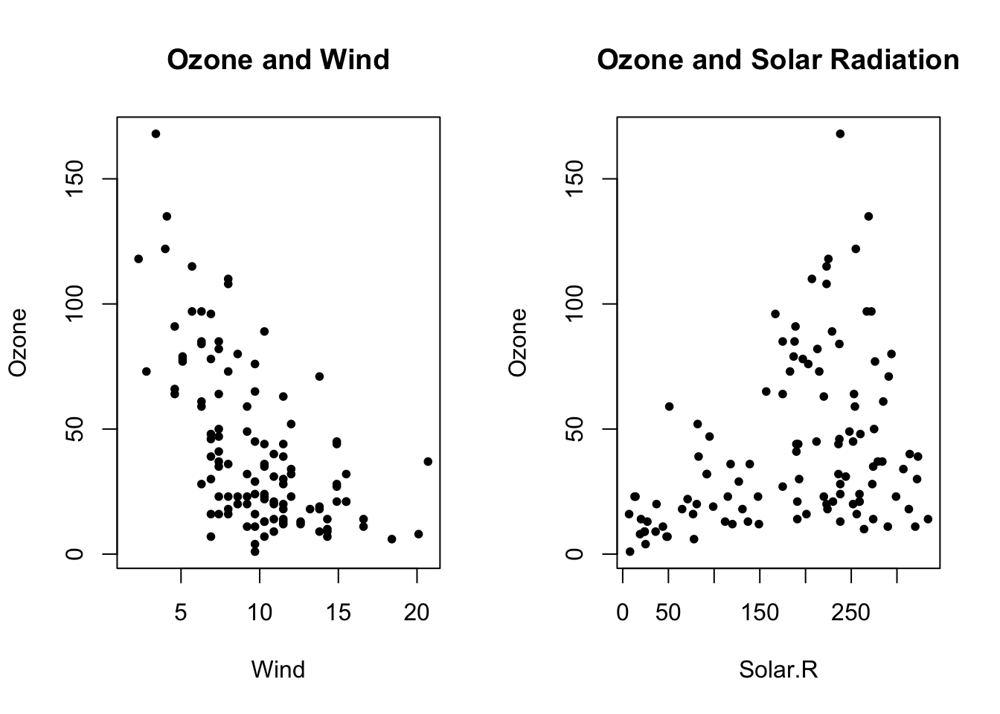
Wenn die Grafik fertig ist sollte man den globalen Parameter wieder zurücksetzen, sodass die nächste Grafik wieder aus einer einzigen Darstellung besteht:
par(mfrow=c(1, 1))
Noch flexibler ist die Funktion layout(). Hier spezifiziert man eine Matrix, welche die Nummern der darzustellenden Plots beinhaltet. Möchte man z.B. drei Plots in zwei Zeilen und zwei Spalten darstellen, wobei sich der erste Plot in der ersten Zeile über beide Spalten erstrecken soll, definiert man dies wie folgt:
Die Angabe der Farbe col=rgb(0, 0, 0, 0.5) im letzten Beispiel definiert die Farbe schwarz über die ersten drei Werte (RGB, also rot, grün und blau) sowie die Transparenz über den vierten Wert (1 bedeutet gar nicht transparent und 0 bedeutet vollkommen transparent – 0.5 ist also halbtransparent).
Nach der Erstellung der Grafik sollte man auch hier wieder den Parameter zurücksetzen, entweder wie oben mit par(mfrow=c(1, 1)) oder mit:
layout(1)
Übungen
Übung 1
Laden Sie den Datensatz penguins aus dem Paket palmerpenguins und erstellen Sie einen Scatterplot der Spalten bill_length_mm auf der x-Achse und bill_depth_mm auf der y-Achse. Beschriften Sie die Achsen mit aussagekräftigen Bezeichnungen.
Übung 2
Erstellen Sie den Scatterplot aus Übung 1 noch einmal, aber stellen Sie diesmal die Punkte der drei Spezies in unterschiedlichen Farben dar. Fügen Sie außerdem eine entsprechende Legende hinzu. Sie können z.B. zuerst einen leeren Plot mit dem Argument type="n" erstellen und dann mit points() nacheinander die Punkte der drei Spezies in unterschiedlichen Farben hinzufügen.
Übung 3
Sehen Sie sich den Datensatz ToothGrowth an (lesen Sie auch die Hilfe dazu) und erstellen Sie damit einen aussagekräftigen Plot. Verwenden Sie Funktionen, die wir in dieser Veranstaltung kennengelernt haben (also plot(), hist() oder boxplot()) – es sind natürlich auch mehrere Plots pro Grafik erlaubt (mittels par(mfrow) bzw. layout())!
Übung 4
Verwenden Sie den Datensatz mtcars und erstellen Sie einen Boxplot der Variable mpg in Abhängigkeit von cyl. Welche Aussage können Sie aufgrund dieser Grafik machen (welche Fahrzeuge verbrauchen mehr bzw. weniger Kraftstoff)? Achten Sie auf die korrekte Interpretation des Kraftstoffverbrauchs in MPG (miles per gallon)!
Übung 5
Erstellen Sie mit dem Datensatz mtcars die folgenden drei Grafiken in einem Plot:
Scatterplot mpg gegen drat
Boxplot von mpg in Abhängigkeit von cyl (siehe Übung 4)
Histogramm von mpg
Verwenden Sie eine geeignete Anordnung der drei Grafiken (z.B. mittels layout())!